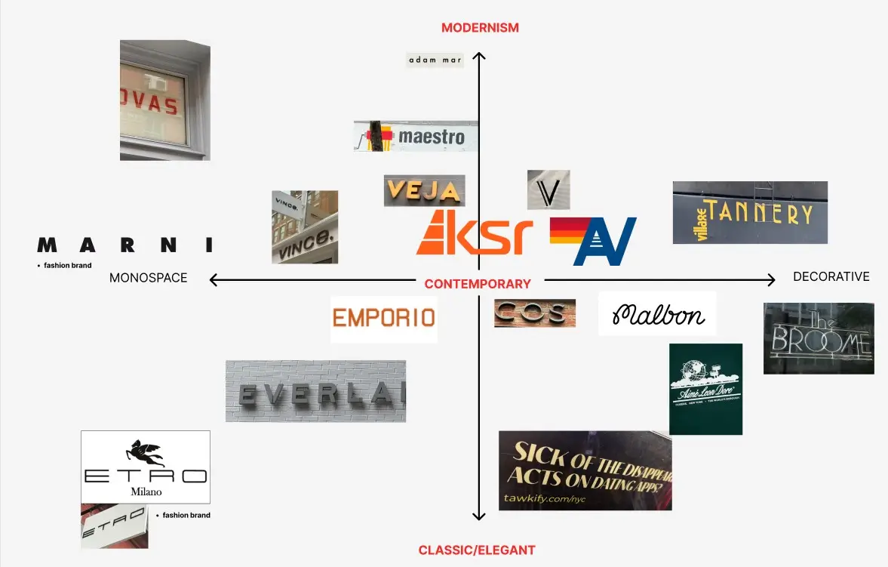
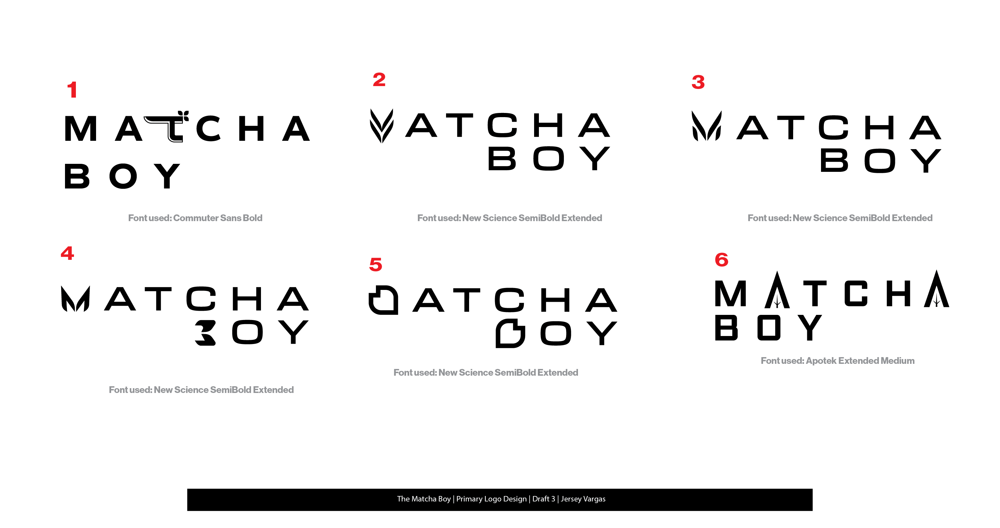
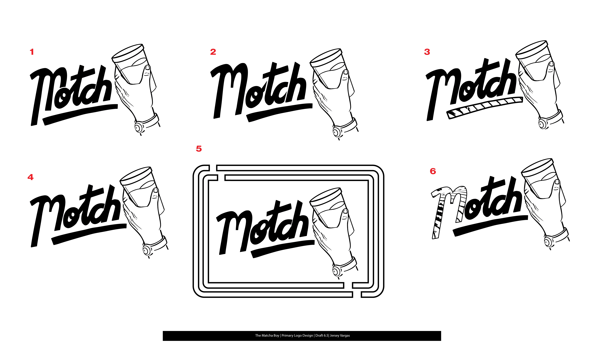

Motch Matcha
Tools: Adobe Illustrator
Role: Graphic Designer
Projects: Logo Design, Brand Identity, Menu, Banners
Motch Matcha is a café dedicated to promoting a healthy matcha lifestyle tailored to male consumers. I collaborated closely with its founders to develop a bold visual identity that would resonate with their target audience.
Throughout my time working with Motch, I designed 50+ drafts of their Logo
LOGO DESIGN PROCESS

I organized images provided by the client in which they felt these references captured a more masculine vibe. From there, after more conversations, we agreed that a monospace font could best represent that energy. I then researched and proposed fonts that aligned with this direction.
We explored the possibility of adding an illustration, similar to the Aime Leon Dore brand...
 ...And later, the possibility of adding more custom-handwritten fonts in the style of a diner.